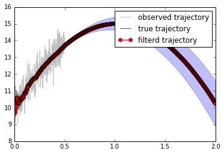

自由落下の状態方程式¶
質量M,ダンパ係数C,弾性係数Kの運動方程式は以下のようになる
\[M \frac{d^{2}x}{dt^{2}} + C \frac{dx}{dt} + K x = f(t)\]
ここで空気抵抗を無視して方程式を整理すると
\[M \frac{d^{2}x}{dt^{2}} = Mg\]
ここで 現在位置 \(x\) と速度 \(v\) を状態とすると状態空間方程式
\[\mathbf{z}_{t+1} = A \mathbf{z}_{t} + B u_{t}\]
\[ \begin{align}\begin{aligned}\mathbf{x}_{t} = C \mathbf{z}_{t}\\のパラメータは以下のようになる。\end{aligned}\end{align} \]
$ :raw-latex:`\mathbf{z}`*{t}= :raw-latex:`\left[ x_{t} , v_{t} \right]`^{T} $ , $ A = :raw-latex:`left[
- begin{array}{rr}
- 1 & dt \ 0 & 1
end{array}
right]
- $ , $ B = :raw-latex:left[
- begin{array}{rr}
- 0 & 0 \ 0 & frac{dt}{M}
end{array}
right]
$ , $ :raw-latex:mathbf{u}`*{t}= :raw-latex:`\left[0 ,Mg \right]`^{T} $ , $ C= :raw-latex:`left[1 ,0 right] $ , $ Q = :raw-latex:left[
- begin{array}{rr}
- frac{dt^{3}}{3} & frac{dt^{2}}{2} \ frac{dt^{2}}{2} & dt
end{array}
right]`q $, $ R = r $
このモデルパラメータを用いてサンプリングレート1000Hzで0.5秒間物体を観測し、その後の1.5秒後までを予測してみよう。
プログラムは以下のようになる
In [3]:
import numpy as np
import matplotlib.pyplot as plt
import os
In [4]:
os.chdir('..')
In [5]:
from kalmanfilter.kalmanfilter import KalmanFilter
In [6]:
dt = 10 ** -3
モデルのパラメータを追加¶
In [7]:
M=10
In [9]:
A = np.array([[1, dt],[0, 1]])
B = np.array([[0, 0], [0, dt / M]])
C = np.atleast_2d([1, 0])
q = 1
r = 1
Q = np.array([[dt ** 3 / 3, dt ** 2 / 2], [dt ** 2 / 2, dt]]) * q
R = np.eye(1) * r
s = np.array([0, 0])
カルマンフィルタ インスタンス作成¶
In [11]:
kf = KalmanFilter(A, C, Q, R, s, initial_covariance=None, drive_matrix=B)
In [13]:
N = 2000
t = np.arange(0, N * dt, dt)
true_x = np.empty(N)
observed_x = np.empty(500)
estimated_x = np.empty(N)
estimated_variance = np.empty(N)
真の軌道の作成(観測不可)¶
In [14]:
y = -t ** 2 * 9.8 / 2 + 10 * t + 10
ガウシアンノイズが加算された観測データを用いて位置と速度を推定¶
In [15]:
for i in range(500):
x = y[i] + np.random.normal(0, 0.5)
observed_x[i] = x
u = np.array([0, -M * 9.8])
kf.update(x, u)
estimated_x[i] = kf.current_state[0][0]
estimated_variance[i] = kf.current_state[1][0, 0]
1.5秒先まで予測¶
In [17]:
m, p = kf.predict_state(N - 500, u)
予測した軌道データを格納¶
In [18]:
for i in range(N - 500):
estimated_x[i + 500] = m[i][0]
estimated_variance[i + 500] = p[i][0, 0]
描画¶
In [19]:
%matplotlib inline
In [20]:
plt.plot(t[:500], observed_x, "k-", label="observed trajectory", alpha=0.25)
plt.plot(t, y, "g-", label="true trajectory")
plt.fill_between(t, estimated_x - estimated_variance ** 0.5, estimated_x + estimated_variance ** 0.5, alpha=0.25)
plt.plot(t, estimated_x, "ro-", label="filterd trajectory")
plt.legend()
Out[20]:
<matplotlib.legend.Legend at 0x1088e05c0>
